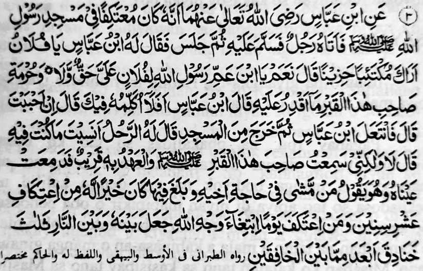

Hadith 3

Miyakathitayan ko Ibn ‘Abbas (Radhiallaho Anhoma) a mata-an a sekaniyan na magi-I’tikaf ko Masjid o Rasulollah (Sallallaho ‘Alaihi Wasallam) na miyakatalingoma a sakatao a mama na siyalam iyan sekaniyan oriyan niyan na miyontod. Pitharo rekaniyan o Ibn Abbas (Radhiallaho ‘Anho): “Hay Pagariya! Pekha-ilay aken seka a khakarata a ginawa ngka ago makamboboko." Pitharo iyan: “Oway! Hay wata o bapa o Rasulollah (Sallallaho ‘Alaihi Wasallam) ka aden a bayadan aken ki Folan na ibet ko kasosoti o khirek sangkanan a Qobor ka di aken khagaga [mayad]". Pitharo o Ibn ‘Abbas (Radhiallaho 'Anho): "O mbitiyara-in aken sekaniyan pantag reka?" Pitharo iyan: “O kabaya a ka!" Mithalompa so Ibn ‘Abbas (Radhiallaho 'Anho) na lominiyo sa Masjid, na pitharo rekaniyan o mama: “Ba ngka kiyalipatan so ikakaden ka si-i?" Pitharo iyan: “Da! Ogaid na bago-bago pen a kiyaneg ako rekaniyan a khirek sangkanan a Qobor [Sallallaho ‘Alaihi Wasallam] [go taros a pirarayasan a lo’ so mbala a mala niyan] ko gi-i niyan katharo-a: ‘Sa tao a lomalakao sabap ko angin o pagari niyan ago misampay niyan so inangin niyan na taralebi oto rekaniyan a di so I’tikaf ko sapolo ragon na sa tao a mag-I’tikaf sa salongan a tontot iyan ko kasoso-at o Allah (Subhaanaho Wa Ta’ala) na tago-an o Allah (Subhaanaho Wa Ta’ala) so pageletan niyan ago so Naraka sa telo a kakar a aya kabelang iyan na so pageletan o dowa a zakeb [ma-ana so langit ago so lopa]”.
OSAYAN
Dowa timan a nganin a marayag sangka-iya Hadith. Paganay ron na miyatharo reketano a misabap ko balas o salongan a I’tikaf, na so Allah (Subhaanaho Wa Ta’ala) na pethago-an Niyan sa telo a kakar so pageletan niyan ago so Naraka, a aya kaolad iyan na lagid o pageletan o lopa ago so langit. Si-i ko [kitab a] Kashful Ghummah, na so Allama Sha'raani (Rahmatullahi ‘Alaihi) na miya-aloy niyan a Hadith a so Rasulollah (Sallallaho ‘Alaihi Wasallam) na miyatharo iyan: “Sa tao a mag-I’tikaf ko mori a sapolo gawi-i ko Ramadhan, na bagi-an niyan so balas o dowa a Hajj ago dowa Umra; go sa tao a mag-I’tikaf ko pageletan o Maghrib ago so ‘Isha, go da den a nggalebeken niyan a rowar ko kapanambayang ago kapamatiya sa Qur’an, na thiyagaran sekaniyan o Allah (Subhaanaho Wa Ta’ala) sa darepa iyan ko Sorga.”
Ika dowa, na miyatharo reketano a so kaogopi ko pagari o tao na phakabegay sa balas a taralebi a di so sapolo ragon a I’tikaf. Sabap si-i na so Ibn ‘Abbas (Radhiallaho ‘Anhoma) na piyotol iyan so I’tikaf iyan; ogaid na khapakay a itaros iyan ko oriyan noto. Pitharo o manga Auliya a so kon so Allah (Subhaanaho Wa Ta’ala) na ndodon so kapedi ko da mapira timan a nganin sa lagid o kapedi Iyan ko tao a maroropet a poso iyan [ma-ana khakarata a ginawa niyan]. Giya-i sabap a tanto tano a tiyapa-osan pantag ko pangeni o manga tao a kiyapakasakitan tano so poso iyan misabap ko da tano kiran kipaginontolanen ago kapangarasi. Tanodan ka so I’tikaf na miyapotol ko masa a lomiyo so tao sa Masjid apiya pantag ko galebek a rek o pagari ta a Muslim. O giyangkoto a I’tikaf na Waajib na mipenggolalan pharoman. So Rasulollah (Sallallaho ‘Alaihi Wasallam) na di den meliyo sa Masjid igira mag-I’tikaf inonta bo igira zong sa ig o di na zong sa dezel o di na phagabedas. So peman so kiyaliyo o Ibn ‘Abbas (Radhiallaho ‘Anho) sa Masjid sabap sa kapagogopi niyan ko ginawa-i niyan, na lagid den noto sa timbangan o tothol pantag ko sakatao a Mujahid a Zasakaratal Maut ko maidan sa Yarmouk, a da sekaniyan makarao minom sa ig taman sa aya maka-inom so pagari niyan a miya-angel. Salakao si-i na khapakay pen a so Ibn ‘Abbas (Radhiallaho ‘Anho) na aya I’tikaf iyan na Nafl, a si-i sa manan na khapakay a kapotola niyan non.
Si-i ko kakhapos angka-iya dapetar, na pagalowin aken si-i a matas a Hadith a madakel a kalbihan a miya-aloy ron, sa giya-i pageposan aken sangka-iya kitab